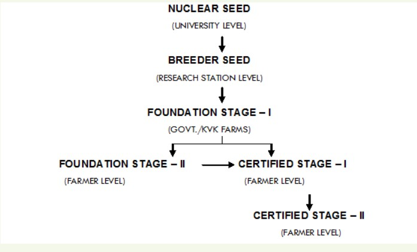

STAGES OF CERTIFICATION

NUCLEAR SEED:
- The seed derived by a plant breeder from selected core plants to produce breeder seed.
- At the time of release of a variety, small quantity of seed normally known as nucleus seed is available with the plant breeder.
- Commercial quantity of seed is produced after a series of multiplication steps.
- Starting from maintenance programme in which nucleus seed is multiplied in a generation system of multiplication as breeder, foundation and certified seed.
BREEDER SEED:
- Breeder seed is produced from nucleus seed under the supervision of a qualified plant breeder in a research institute of Agricultural University.
- Breeder seed is monitored by a joint inspection team of scientists and officials of certification agency and National Seed Corporation.
- The genetic purity of breeder seed crop should be maintained at 100 per cent.
- Tag colour: Yellow